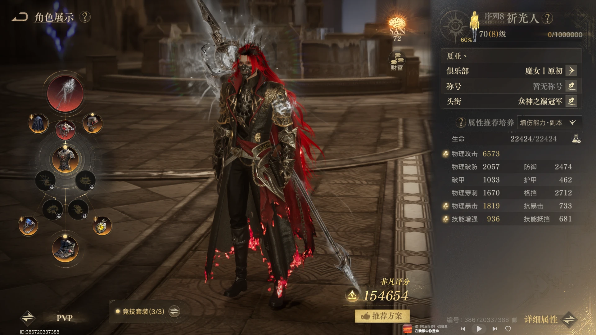
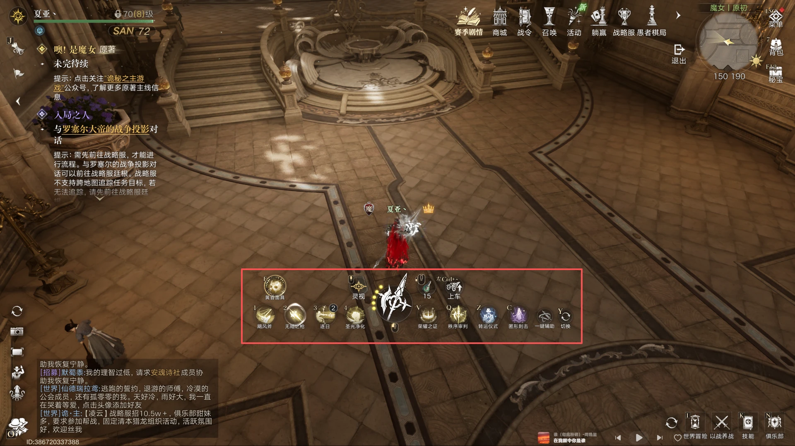
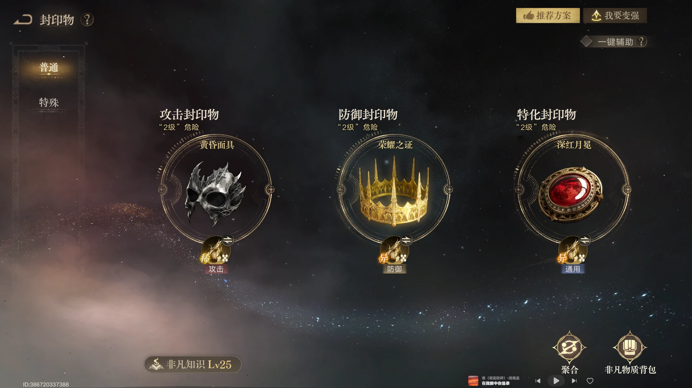
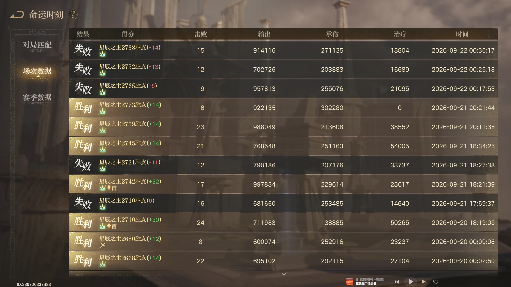
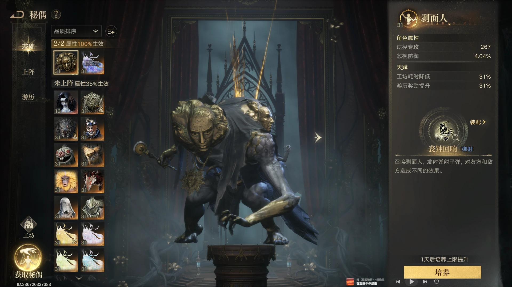
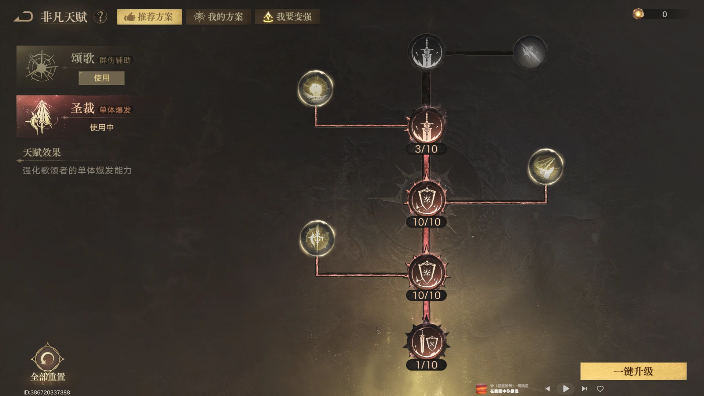

装备与属性选择
红武优先补齐当前装备框架，穿刺先到 1700 左右，其他资源再补攻击、暴击与技能增强。

当前装备组合
当前推荐红武、独珍披风、红胸针、百炼头盔、独珍衣服、独珍戒指、百炼鞋子和百炼项链。
没有红武的替代方案
没有红武时可以先带百炼武器，并把百炼项链换成独珍项链。
穿刺优先到 1700 左右
当前 PVP / GVG 优先保证穿刺达到 1700 附近，剩余属性再补攻击、暴击和技能增强。
不再优先堆破防
秘偶收集属性已经提供较多忽视防御百分比，基础值叠加百分比后可以达到较高水平，因此当前不需要继续把资源集中到破防。
装备恩赐
武器优先三攻一技强；胸针双技强；戒指双技强；项链选择双暴或穿刺暴击。拥有红武时，恩赐可选择三攻两技强。
技能组与爆发循环
新人脉未满级先用梦魇冲击；满级后改技能，并通过手动卡 buff 轴保证秘偶技能爆发。

新人脉未满级先用梦魇冲击
新人脉布莱恩没有达到满级时，继续使用梦魇冲击；只有新人脉满级后，才建议更换技能。
不推荐歌颂一键连招
当前不推荐使用歌颂一键连招。自动循环容易打乱 buff 轴，导致伤害无法完整打出；需要用稳定的技能轴手动卡住爆发窗口。
秘偶技能是主要爆发
当前基本伤害占比最高的技能是秘偶技能，依赖新人脉和圣光双 buff 提供增伤。建议练习新的循环，让双 buff 覆盖高额爆发，而不是只追求自动化。
封印物选择
当前 PVP / GVG 固定使用黄昏面具、荣耀之证和深红月冕，不再依赖神灯刷新 buff 覆盖。

固定三件套
当前 GVG / PVP 固定选择黄昏面具、荣耀之证和深红月冕。
为什么不再带神灯
新技能轴已经可以弥补 buff 覆盖率，不再需要神灯刷新；深红月冕提供增减伤，荣耀之证提供霸体和减伤，更适合把循环与伤害上限打出来。
12v12 战绩参考
新技能轴成型后，12v12 可以保持较高的输出和击杀表现，但仍应以实际熟练度为准。

用战绩验证循环
图中展示 12v12 的多场战绩，作为当前装备、封印物和技能轴的实战参考。不要把单场分数直接当作固定承诺，重点观察自身能否稳定完成循环和爆发。
秘偶上阵选择
优先从剥面人、星之虫守秘、小丑和子爵夫人中组合，当前最优先考虑子爵夫人与剥面人。

优先子爵夫人与剥面人
当前秘偶可以从剥面人、星之虫守秘、小丑和子爵夫人中选择，最优先考虑子爵夫人与剥面人的组合。
缺少指定秘偶时
如果没有上述秘偶，先使用已有的高练度秘偶，不必为了追求固定组合牺牲当前练度和实战稳定性。
非凡天赋与小号方案
大号天赋只负责补齐属性；小号优先走烧尸体流，确保职业作用稳定。

非凡天赋只补属性
非凡天赋主要用于补足当前缺少的属性，面板缺什么就点什么，不需要为了固定方案放弃实际收益。
小号优先走烧尸体流
当前更推荐小号走烧尸体流，先发挥歌颂者的职业作用。技能组可以选择旋风斧子、惩戒、神圣盔甲和圣燃焚净。
切换颂歌天赋激活圣燃焚净
需要激活圣燃焚净时，切换到颂歌天赋即可。秘偶沿用上文选择；如果暂时没有对应秘偶，就先使用已有的高练度秘偶。
特殊封印物优先保活
小号封印物只需要优先注意特殊封印物带拐杖保活，其余位置可以按已有装备和属性灵活选择，装备与属性方向参考上文。